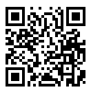

What is bitcoin ?
Bitcoin is a new kind of money. It's the first decentralized electronic currency not controlled by a single organization or government. It's an open source project, and it is currently used by more than 100,000 people. All over the world people are trading hundreds of thousands of dollars worth of bitcoins every day with no middle man and no payment card companies. It's a startup currency, which has never happened before.
Why should I use it?
If any of the following apply to you, then you should seriously consider Bitcoin:
You want to sell things online, and you find merchant accounts expensive or too much hassle.
You want to pay a blogger a few pennies for an interesting article, and just want it to be easy.
You want to send money to someone using your smartphone, or through SMS.
You want digital cash that works worldwide so that goods and services become less expensive.
How much does it cost?
Bitcoin and MultiBit are free and open source. There is no charge for using them. If you want to build them yourself, you can do so - all the necessary code is there for the taking. If you want to run an online shop or blog or whatever taking payment in bitcoins you can do so for free. You don't even have to register with anyone.
How can I get hold of bitcoins?
It's exactly the same as purchasing any other currency. Go to an online exchange (such as Mt Gox, CampBX, Intersango) that accepts their local currency. The process is the same everywhere, you deposit funds (there are many ways to do this) and then use those funds to buy bitcoins on the exchange. Once you have the bitcoins, you can then withdraw them from the exchange and send them anywhere - perhaps to your smartphone.
Remember, your friends can also do this. If they have bitcoins and are willing to exchange them for local currency, then you can strike a deal and get them that way.
And what if I want my old money back ?
The exchanges work the other way too. If you want to convert your bitcoins back to your local currency you simply do the reverse. You deposit bitcoin funds on the exchange, and then use those funds to buy your local currency. You can then withdraw your local currency from the exchange using a variety of methods, such as a direct bank transfer to your savings account.
It's important to realise that as more merchants accept bitcoins for day to day goods and services you will need to change back to your old money less and less. Imagine if you could buy your groceries in bitcoins…
What jargon do I need to know ?
Here are some terms that get used a lot in the Bitcoin community.
Bitcoin - the digital cash protocol (has a capital B)
bitcoin - a unit within Bitcoin (has a small b), can be divided up into smaller parts (0.000 000 01 is the smallest part at present)
wallet - a small data file that provides the keys to your bitcoins (keep it secret, keep it safe)
Bitcoin client - a computer program that understands how to work with bitcoins
QR code - a square block of dots that computers and smartphones can scan like a barcode to read information. Here is an example:

transaction - occurs when bitcoins change hands (a transaction is not reversible so no chargebacks are possible)
block - a group of transactions
blockchain - a group of blocks (it represents all the transactions that have ever occurred within Bitcoin)
miner - a computer program that works to build the blockchain and generates more bitcoins along the way
So what does MultiBit do ?
MultiBit is a Bitcoin client. It understands the Bitcoin protocol so it can send and receive bitcoins. It makes the job of sending and receiving bitcoins simple and secure. MultiBit can handle multiple wallets so you can maintain different Bitcoin "accounts" for different purposes. On the 'Wallets' panel you can see all your wallets and their details.
MultiBit provides additional features over the standard Bitcoin client. It offers different languages, single click payment and quicker access to new features. The MultiBit team work in close harmony with the standard Bitcoin client development team to ensure that we're all moving in the same direction.
What languages is MultiBit available in ?
MultiBit is translated into many languages. To see our current list of available languages, visit our translation website.
OK, I'll give it a go.
How do I start ?
Download and install MultiBit for your system. Then, after starting it up, take a look at the dedicated YouTube MultiBitOrg channel which can show you everything you need to know. It won't take very long because it's all very straightforward.
This Bitcoin looks really interesting.
I want to know more, much more.
There is a wealth of information about Bitcoin available so it depends on what you're looking for and how deep you want to go. Here are a few launching links to get you started.
Wikipedia articles (high level overview)
The main Bitcoin website (the FAQ and wiki sections answer many questions)
The very popular Bitcoin Question and Answer site (ask any Bitcoin related question, no matter how technical, to get a quick answer)
You can find out more about using bitcoins, including viewing an introductory video, at either of these excellent information sites:


Download
Standard Windows installer (EXE). Compatible with Windows 2000 - Windows 8 (32/64 bit)
Linux / Unix installer
Installers are signed with the PGP key 0x23F7FB7B (a subkey of 0x79F7C572)
Features
-
10 minutes: To send any amount, anywhere in the world
-
Secure: MultiBit uses the Bitcoin currency protocol
-
International: many languages supported